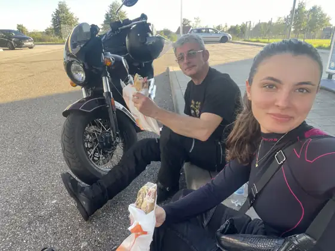
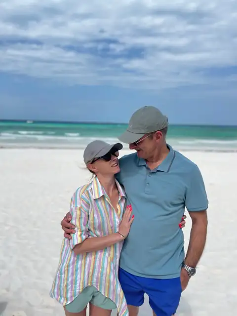
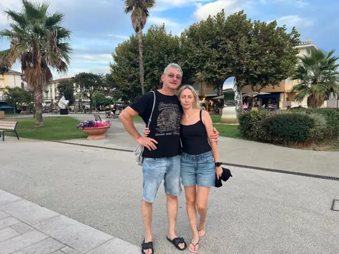
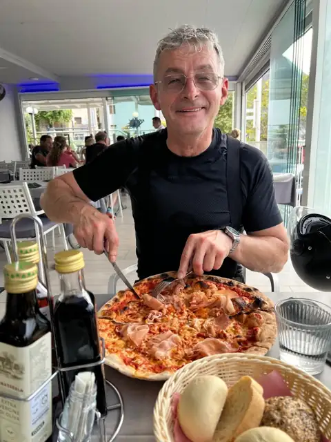
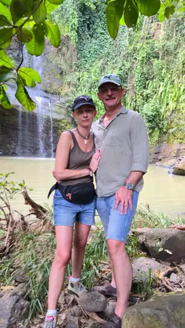
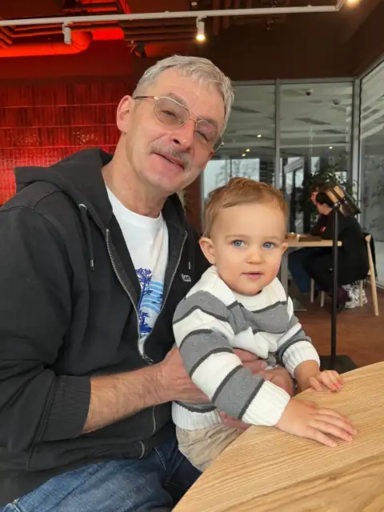
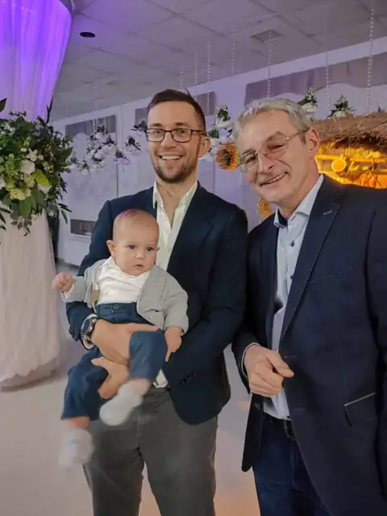
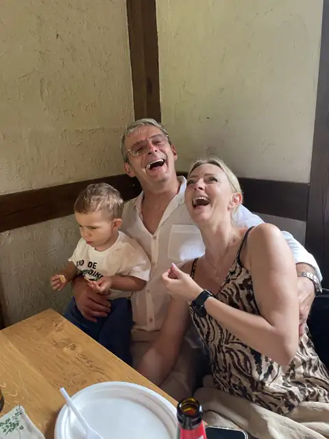
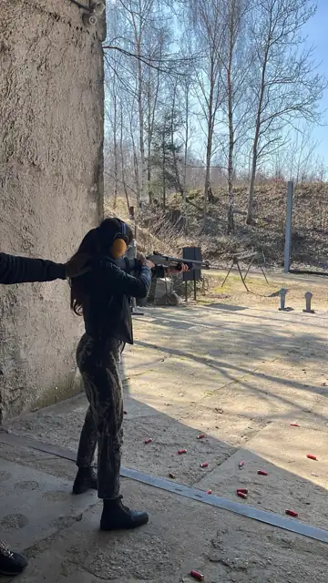
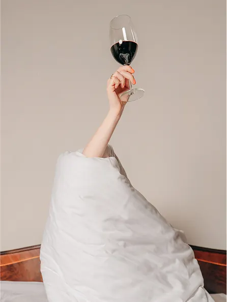

Najpierw - winiarnia.
Zwiedzanie winiarni i piwniczki Winnic Jaworek.
60. URODZINY MARIUSZA
Dużo już za Tobą. Ale mamy przeczucie,
że jeszcze więcej dobrego przed Tobą.
Z miłością, Marta i Dominik
ZACZNIJMY OD NAJWAŻNIEJSZEGO
Życzymy Ci dużo zdrowia i energii do wszystkiego,
co lubisz. Żebyś zawsze miał ochotę na kolejną przygodę.
JESZCZE TYLE MIEJSC DO ZOBACZENIA
Dużo podróży. Tych dalekich i tych całkiem blisko. I jak najwięcej wycieczek motocyklowych - z Gosią i z nami.
Żeby zawsze znalazł się czas na kolejny wyjazd.
A my już czekamy na następny wspólny.





NIC NIE DZIEJE SIĘ BEZ PRZYCZYNY
Życzymy Ci, żeby nowa praca okazała się jeszcze lepszym miejscem niż poprzednia. Żeby ta zmiana była owocna i dała Ci dużo satysfakcji.
Może właśnie tak miało być. Obyś niedługo mógł powiedzieć: „Dobrze, że tak się potoczyło”.
TO, CO NAJLEPSZE, JEST BLISKO
Pociechy z wnuka Boryska. Jak najwięcej czasu z Gosią i z nami. Wspólnych chwil, do których chce się wracać.
I więcej spokoju na co dzień.
Takiego, przy którym naprawdę można odetchnąć.




I JESZCZE JEDNO, BARDZO KONKRETNE
Na strzelnicy, oczywiście.
A poza nią - dobrych decyzji, udanych planów
i jak najwięcej powodów do zadowolenia.
A skoro już o dobrych planach…
Mamy dla Ciebie jeden.

Mariuszu! Gosiu!
TEN WIECZÓR JEST DLA WAS
Romantyczny wieczór we dwoje: zwiedzanie winiarni i piwniczki, degustacja win i kolacja. I czas tylko dla Was.
Od Marty i Dominika, z miłością.
WASZ PREZENT
Dla Mariusza i Gosi · dla dwóch osób
Zwiedzanie winiarni i piwniczki Winnic Jaworek.
Przystawka, zupa, danie główne i deser. Cztery dania i czas dla Was.
Komentowana degustacja pięciu rodzajów wina, prowadzona przez dedykowanego opiekuna.
Z miłością, Tato.
Na kolejne wspólne chwile.